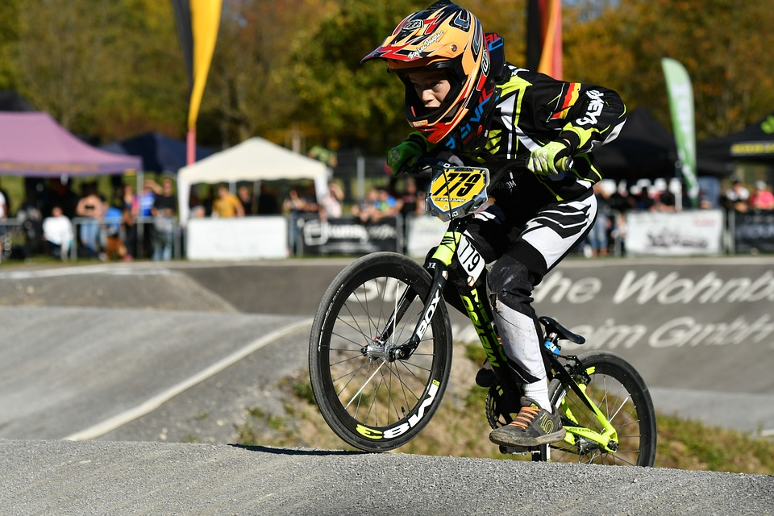
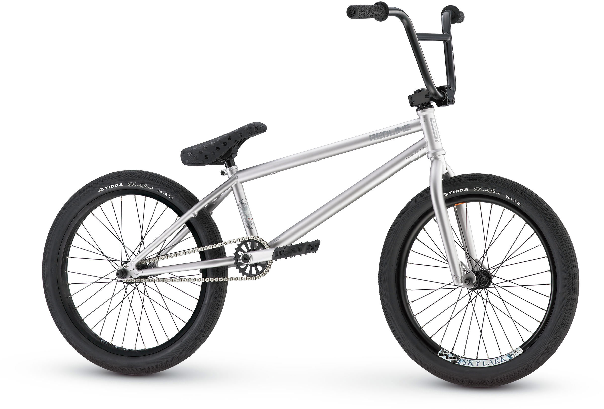
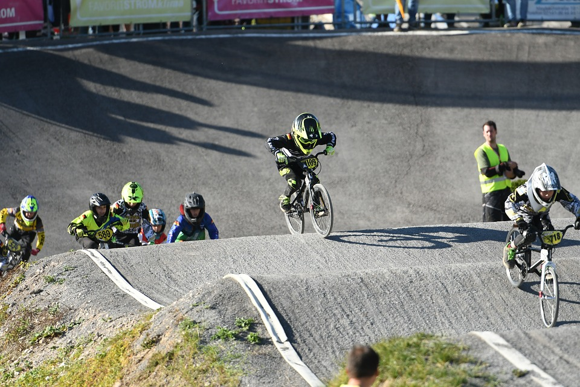

BMX Racing
BMX racing is a type of off-road bicycle racing derived from motocross racing.
BMX bicycle races are sprint races on purpose-built off-road single-lap race tracks. The track usually consists of a starting gate for up to eight racers. From the starting gate the riders drop down a ramp into a serpentine, dirt race course made of various jumps and rollers. The course is usually flat, about 15 feet (4.6 m) wide and has large banked corners.
The sport of BMX racing is facilitated by a number of regional and international sanctioning bodies that provide rules for the sport. The sport is very family oriented and largely participant-driven, with riders ranging in age from 2 to 70, and over. Professional ranks exist for both men and women, where the age ranges from 18 to 40 years old.


